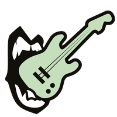
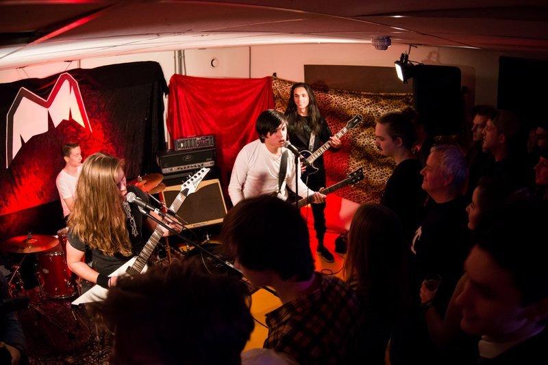

CLIT CITY
SM-Kelder in de krochten van Willem Twee.
- Dag
- vrijdag
- Begin
- 22:00
- Einde
- 01:00
- Dag
- zaterdag
- Begin
- 17:00
- Einde
- 03:00
- Soort
- Concept
- Locatie
- Willem Twee
- Plek
- Kelder
CLIT CITY
Na een heet optreden op RAUWKOST 2019, keert Clittenband dit jaar terug met een eigen festivallocatie. CLIT CITY is een SM-Kelder op een plek waar de zon nooit schijnt. Verscholen in de kerkers van het Willem Twee Poppodium geven de meest obscure artiesten van RAUWKOST zich bloot.
Line-up muziek:
Clittenband
Gaping Moles
Magic Tom & Yuri
Roel C. Verburg
Dicky Twelve Inches
Naast het muzikale programma kan je je laten onderspuiten met erotische poëzie. Zo ontdek je de stoute kant van onder andere de Stadsdichter van 's-Hertogenbosch.
Line-up poëzie:
Friso Woudstra
Doeko L.
Jolies Heij
Erotic Elsa
Miranda Viguurs
Renk van Oyen
Bij de Pop-Up Sexshop van On Top Of Love kan je jezelf van een avontuurlijke souvenir voorzien. Bereik vervolgens geboeid je hoogtepunt op de wenteltrap, bij de (s)expositie waar beeldend kunstenaars Frank Willems, Emiel van Dongen, Floor van Kesteren en Dylan van de Wal hun wildste fantasieën in beeld brengen.
Openingstijden
Vrijdag 24 januari: 22.00 - 01.00
Zaterdag 25 januari: 17.00 - 03.00



Willem Twee

Grote Zaal Kleine Zaal Spiegelzaal Kunstruimte Kelder
In de Willem Twee fabriek werden vroeger sigaren gemaakt, maar nu beeldende kunst, grafiek, film en muziek!

"Als je naar de Willem Twee fabriek komt ben je de sigaar: de artiesten daar grijpen je direct bij de strot, en laten je niet meer los. Dat werkt nogal verslavend, je wil er niet meer van weg… Pas op dat de rest van het programma niet in rook voor je op gaat!"
Kelder
Dit jaar is de kelder geclaimd door Clittenband. Zij hebben als echte rauwdouwers hun Clit City concept doorgedouwd. Ga dus zeker een kijkje nemen en laat je onderdompelen in hun vunzig poëtische wereld.
